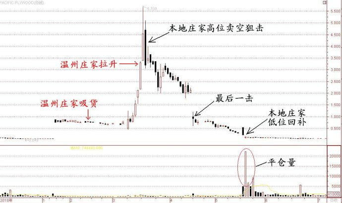

第74篇•教你炒股系列4：沪深股市运行特点（1）
谷为陵
1、不同市场适用理论和方法有所不同
我的一个重要观点是，虽然不同的股票市场具有一定的共性，但每个国家和地区的股票市场有其个性，因此，不同的股票市场适用的投资方法稍有或有很大的不同。极端的情况是，在某一个市场适用的投资理论和方法，也许在另一个市场就不适用。
比如，在A股盛行炒小盘低价股，庄家也专门挑这类股票坐庄。虽然现在监管严了，但庄家还是不少。坐庄的好处是能够控制股价涨跌，庄家可以获得确定性股价操纵收益。一般来说，股价炒得越高，庄家获利越大。若一只股票被庄家炒高10倍，就算庄家砸盘出货，也会赚很多钱。当年的亿安科技不就是这样的吗？现在我要问一个问题，假若A股的一个大庄家以A股坐庄模式去香港市场坐庄，结果会怎样呢？
这有一个真实的案例。据今年5月30日的《理财周报》报道了一伙温州大炒家在香港股市坐庄，结果被打得稀里哗啦的事情。过程是这样的，大约从今年1月开始，一批温州炒家开始收集一只很不起眼的名叫PACIFIC
PLYWOOD（00767）的香港本地股，建仓成本价在0.5至0.7元港币之间。今年3月上旬该股拉升，短短的7个交易日内，就已飙涨了超过10倍。
但股价炒高后，并没有什么买盘出现，庄家根本出不了货。更严重的是，不仅没有买盘出现，凭空还多出了很多卖盘。这些卖盘是从哪里来的？原来是香港本地的庄家通过10倍的杠杆，在场外卖空了数亿股PACIFIC
PLYWOOD的股票。要命的是，这伙温州大炒家也是通过10倍的杠杆融资将股价拉抬起来的，随着卖压沉重，股价不断下跌，给温州炒家融资的几家银行就要收回融资。眼看温州炒家们的资金链要断掉，香港本地庄家就趁势给了PACIFIC
PLYWOOD最后致命的一击——就在5月20日该股股价暴跌60%。至5月中旬，与今年高点相比，该股暴跌98%，香港本地庄家通过低位回补暴赚，而那伙温州大炒家估计是光着屁股出来的。
温州大炒家坐庄PACIFIC PLYWOOD的过程如下图所示：

温州大炒家为什么失败？原因有二：一是他们恶炒的低价小盘股在香港股市根本没有流动性，在股价炒高后没有任何买盘，不能够出货，这与A股市场简直是天壤之别；二是温州的炒家吃了孤陋寡闻的亏，也许他们只知道炒高能赚钱，却不明白在香港，通过高位打压股价也能赚钱。
这就是不同市场，具有不同的游戏规则。要在A股市场获得成功，就首先需要明白A股市场是一个什么样的市场，其运行特点是什么。
今天太晚了，明天再接着说吧。